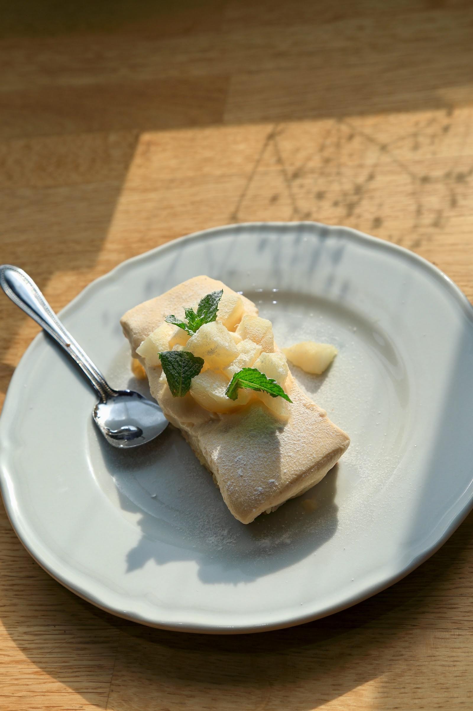
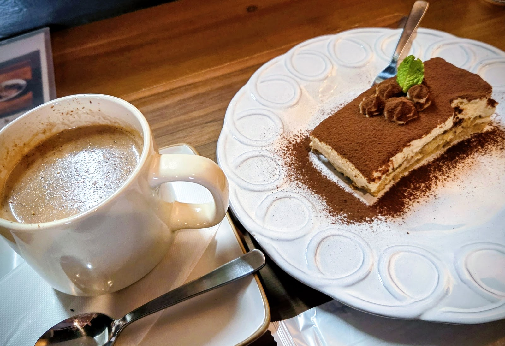
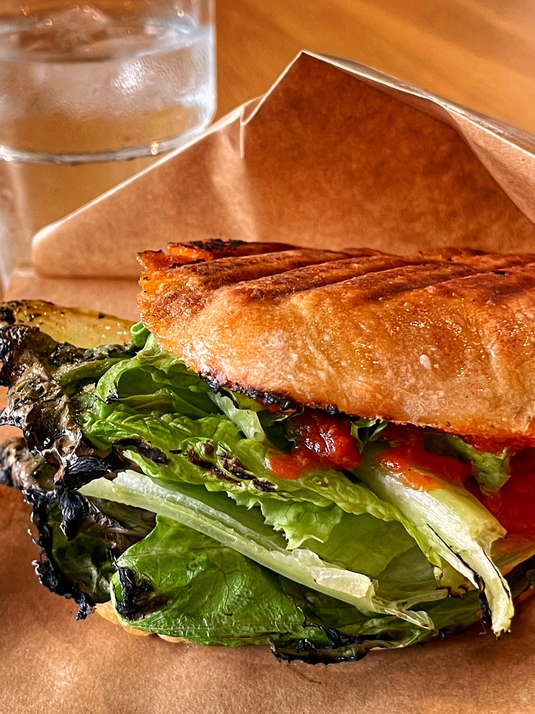
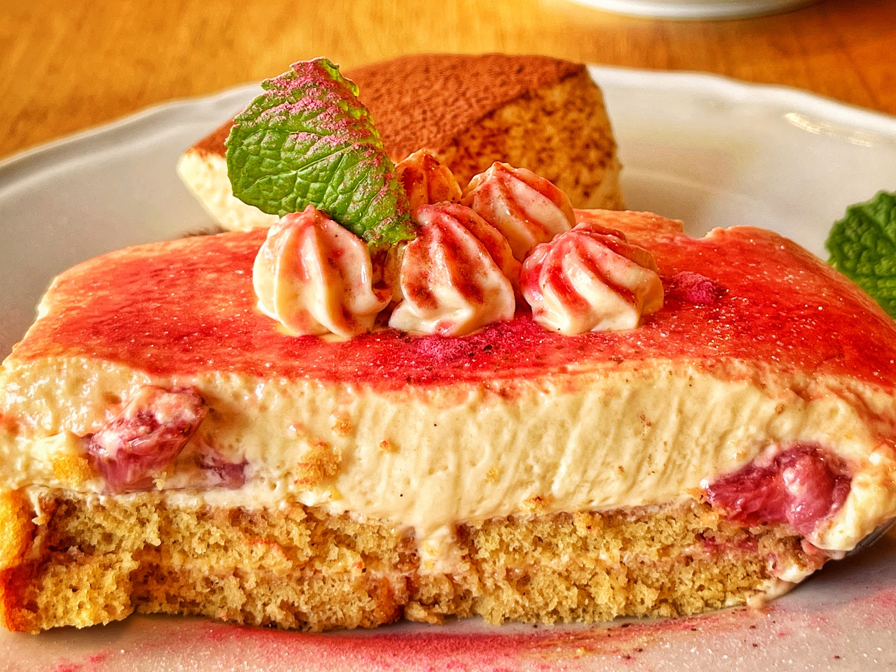

流鉄流山線 平和台駅から徒歩30秒
自家製ティラミスと、本格チャイの専門店。
甘さ控えめでコクのあるクリームを、ひとつひとつ手作りするティラミス。数種のスパイスを効かせた本格チャイ。ランチには、手作りのパニーニやパスタもご用意しています。
写真: キミとティラミス You&Tiramisu 流山（Googleマップ）
Features
選ばれる理由
平和台駅の目の前、徒歩30秒
流鉄流山線 平和台駅を出てすぐ。窓際の席からは、行き交う電車の姿を眺めながらゆったりとした時間を過ごせます。
Googleクチコミ★4.8（46件）
これまでにご来店くださった多くのお客様から、味と接客について高い評価をいただいています。
自家製ティラミス×本格チャイの専門店
数種のスパイスを合わせた本格チャイと、甘さ控えめでコクのある自家製ティラミス。苺や桃など、季節ごとに変わる限定フレーバーもお楽しみいただけます。
Concept
こだわり
一杯のチャイ、ひと皿のティラミスに、素材選びから丁寧に向き合っています。季節ごとに表情を変えるフレーバーとあわせて、自家製ならではの味わいをご覧ください。

写真: キミとティラミス You&Tiramisu 流山（Googleマップ）

写真: キミとティラミス You&Tiramisu 流山（Googleマップ）
Gallery
ギャラリー
店内の雰囲気からティラミス・チャイのクローズアップまで、写真でもキミとティラミスの世界観をご覧いただけます。

写真: キミとティラミス You&Tiramisu 流山（Googleマップ）

写真: くみこ（Googleマップ）

写真: 黒鳥（Googleマップ）

写真: 黒鳥（Googleマップ）
Reviews
お客様の声
Googleクチコミ ★4.8（46件）
ティラミスとチャイに特化したお店です。
数回程度の来店ですが、いつも店主さんが気さくに迎えてくださり温かい気持ちになります。
ティラミスはしっかりとコクのあるクリームがとても美味しいです。
普段はチャイをほとんど飲まないのですが、こちらのお店のチャイはしっかりとした香りや風味もありつつパンチが強過ぎないためとても飲みやすく美味しくいただけました。
ティラミスとチャイがお好きな方にオススメしたいお店です！（チャイ以外のドリンクもあります）
Access
アクセス
〒270-0157 千葉県流山市平和台3丁目4-11。流鉄流山線「平和台駅」から徒歩30秒の場所にございます。
営業時間・定休日は変更となる場合がございます。最新情報はInstagram（@kimi_tira）にてご確認ください。